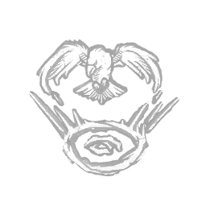

召唤：背信乌鸦 Invocation: Treacherous Crows
所属：陶莉·凯恩（逃生者）
| 等级 | 档位 1 | 档位 2 | 档位 3 |
|---|---|---|---|
| 数值 | 1 1 | 1.5 | 2 |
描述
「精通奥术之人，无需惧怕那些警觉的飞鸟。」 【仅在地下室时生效】 按下主动技能按钮以开始祈唤，祈唤需60秒完成。 祈唤期间：若对方同样装备了祈唤技能，你的气场增加100%；若对方未装备，则增加50%。 祈唤完成后，激活以下效果： 每当设陷者惊飞一只乌鸦时 恐惧范围 气场 1/1.5/2 秒 你自动进入受伤状态，并在本次试炼剩余时间内一直处于破损状态效果。 「记住你的训练。他们把关于乌鸦的一切都教给你了。」——陶瑞·凯恩